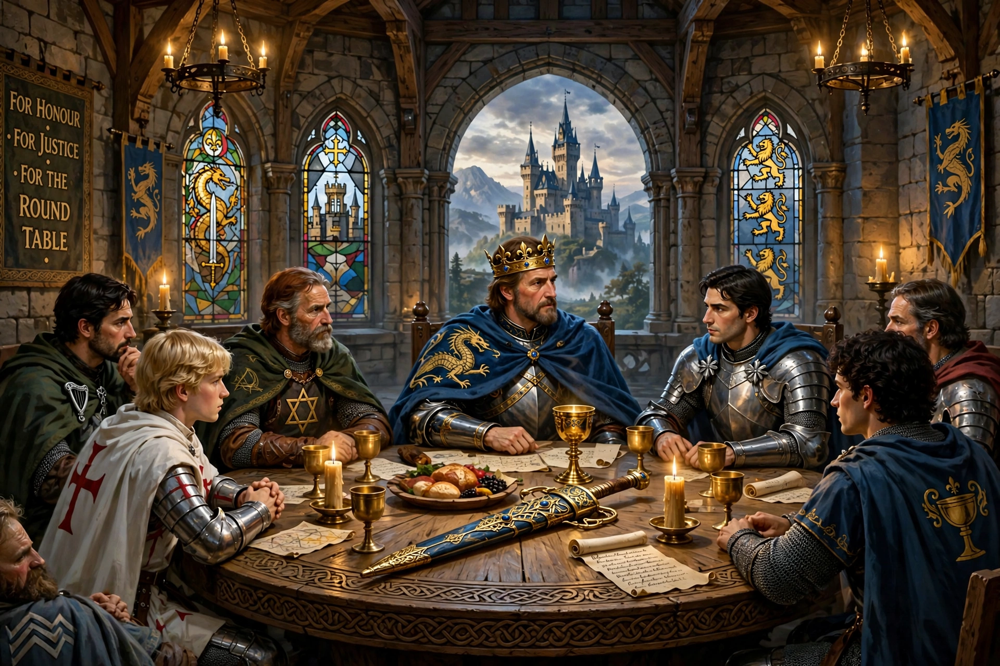

| Knights of the Round Table | |
|---|---|
 | |
| Legendary leader | King Arthur |
| First mention | Wace, Roman de Brut (1155) |
The Knights of the Round Table are the legendary fellowship of King Arthur in Arthurian literature. The Round Table — first mentioned by Wace in 1155 — seated them as equals, with no head of the table.
Numbers vary from a dozen to over 150 across texts. The best known include Lancelot, Gawain, Perceval, Galahad, Kay, Bedivere, Tristan, Bors, Gareth and Mordred. The Siege Perilous was reserved for the knight destined to achieve the Holy Grail — Galahad in later tradition.
The fellowship embodies chivalry, courtly love and loyalty, and its destruction — through Lancelot and Guinevere's affair, the Grail quest's losses, and Mordred's treason — forms the tragic climax of works such as Malory's Le Morte d'Arthur.